Wprowadzenie
Jesteśmy nową ekipą, którą nie wszyscy będą kojarzyć. Przez długi czas byliśmy czynnymi graczami, którzy aktywnie uczestniczyli w różnych projektach, rywalizowali i poszukiwali w nich tego czegoś, co mogłoby zatrzymać nas na dłużej. Niestety, zawsze czegoś brakowało. Z tej potrzeby narodził się Monastyr2 – serwer zbudowany na naszej wizji i doświadczeniach, których nie potrafili zapewnić poprzedni właściciele serwerów.
Od samego początku stawiamy na zaangażowanie, otwartość i nietypowe podejście do graczy. Chcemy tworzyć projekt, który nie będzie jedynie kolejnym, krótkotrwałym serwerem. Wręcz przeciwnie – Monastyr2 to wizja długofalowa, z założenia przełomowa, która ma wnieść na scenę Metina coś świeżego i niepowtarzalnego.
Dotychczas większość serwerów opierała się na powielaniu tych samych schematów. My pragniemy zrobić krok dalej – zaczynamy od klasycznego stylu, aby stopniowo rozwijać go o nowoczesne elementy, które dostarczą wam nie tylko satysfakcji z gry, ale również prawdziwej dawki emocji i chęci do rywalizacji. Monastyr2 to projekt budowany z pasją, determinacją i jasnym celem – aby wreszcie powstało miejsce, w którym gra daje tak wiele, jak powinna.
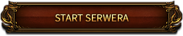
24 października 2025
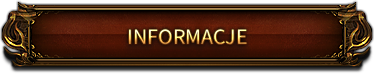
- Maksymalny poziom: 105
- Typ serwera: hard/medium
- Królestwa: Jinno oraz 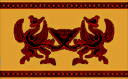 Chunjo oraz Shinsoo
- Bonus 6/7: Nie
- Punkty statusu: 90
- Klasy postaci: 4
- Alchemia: Tak
- Szarfy: Nie
- Dostępne kanały: 5
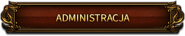
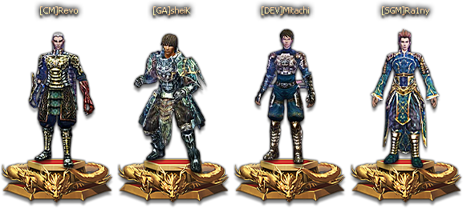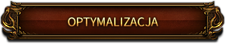
Jako nieliczni w Polsce wprowadzamy zmianę klienta z 32-bitowego na 64-bitowy, co gwarantuje większą stabilność oraz płynniejszą rozgrywkę – nawet na nowszych systemach operacyjnych.
Dzięki licznym usprawnieniom technicznym gra działa wydajniej, zużywa mniej pamięci i zasobów, co przekłada się na brak nagłych crashy czy lagów, nawet podczas długich sesji.
Poprawiliśmy również jakość grafiki – cienie, mgła oraz efekty środowiskowe prezentują się lepiej i bardziej nowocześnie.
Dodatkowo zoptymalizowaliśmy działanie w walkach masowych, aby nawet przy dużej liczbie graczy na ekranie rozgrywka pozostała płynna i bezproblemowa.
Wszystkie te zmiany sprawiają, że gra stała się bardziej stabilna, szybsza i przyjemniejsza, a Ty możesz cieszyć się rozgrywką na najwyższym poziomie.
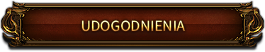
System Farm-Block
Zgodnie z przeprowadzoną ankietą na naszym discordzie
zdecydowaliśmy się dodać system Farm-Block.
System Farm-Block został wprowadzony, aby ograniczyć nadużycia
związane z masowym korzystaniem z wielu kont jednocześnie.
Każdy gracz może aktywnie farmić maksymalnie 3 kontami.
Po przekroczeniu tego limitu, system automatycznie blokuje możliwość dalszej gry
na kolejnych postaciach.
Panel boczny
| 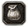 | Shop Offline |
| Bonus Switcher | |
| Kosz | |
| Wikipedia | |
| 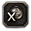 | Usunięcie Polimorfii |
| 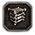 | Magazyn |
| 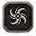 | Dopalacze |
Mapa Teleportacji
W grze będziemy mieć możliwość używania mapy teleportacji pod
przyciskiem TAB.
Bonus Switcher
W grze, w panelu bocznym znajdziemy bonus switcher.
Zaczarowań Przedmiotów na serwerze będzie duża ilość, więc umożliwi to wam łatwiejsze miksowanie potrzebnych bonusów.
Podgląd Dropu
Na serwerze będziecie mieli możliwość sprawdzenia jakie przedmioty jesteście w stanie zdobyć.
Robimy to naciskając przycisk na pasku zdrowia danego potwora / kamienia / bossa.
Wikipedia
Z myślą o wygodzie graczy przygotowaliśmy pełnoprawną Wikipedię dostępną bezpośrednio w grze. Funkcja ta została umieszczona w bocznym pasku interfejsu, z możliwością jego zwinięcia dla osób preferujących bardziej klasyczny wygląd.
Każdy przedmiot w grze posiada pełny opis – od materiałów wymaganych do ulepszenia, aż po źródła dropu z bossów i metinów. Całość jest czytelna, aby szybko znaleźć potrzebne informacje.
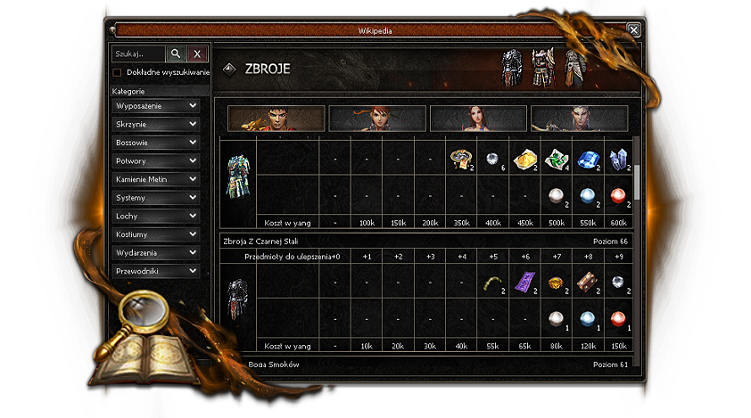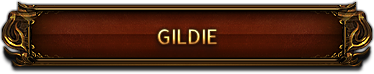
System Gildii
System Gildii umożliwia wzmocnienie postaci dodatkowymi bonusami.
- Założenie gildii: 50 poziom + opłata w yang
- Maksymalny poziom gildii: 20
- Maksymalna liczba członków: 40
Doświadczenie Gildii
Awans gildii wymaga eliksirów gildii
Możemy je zdobyć z legend, bossów mapowych, eventów oraz z małą szansą z dungeonów.
Dostępny jest także crafting.
Poziomy gildii – wymagane butelki
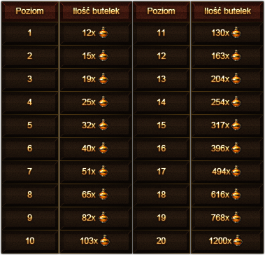Bonusy pasywne gildii
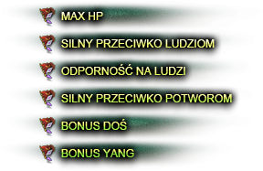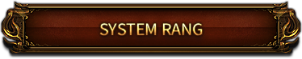
Zmodyfikowaliśmy system rang dzieląc go na pozytywne i negatywne.
W ten sposób chcemy zachęcić graczy do wyboru poszczególnych aktywności
Negatywne rangi
| Przedział | Nazwa | Bonusy |
|---|---|---|
| -1 do -10 000 | Agresywny | Silny przeciwko ludziom +2% |
| -10 001 do -25 000 | Nieuczciwy | Silny przeciwko ludziom +4% |
| -25 001 do -45 000 | Złośliwy | Silny przeciwko ludziom +8% |
| -45 001 do -99 999 | Okrutny | Silny przeciwko ludziom +13% |
| -100 000 | Krwawy |
Silny przeciwko ludziom +18% Odporność na ludzi +3% Szansa na cios krytyczny +5% Szybkość zaklęć +10% |
Pozytywne rangi
| Przedział | Nazwa | Bonusy |
|---|---|---|
| +1 do +10 000 | Przyjazny | Silny przeciwko potworom +1% |
| +10 001 do +25 000 | Dobry | Silny przeciwko potworom +3% |
| +25 001 do +45 000 | Szlachetny | Silny przeciwko potworom +6% |
| +45 001 do +99 999 | Rycerski | Silny przeciwko potworom +10% |
| +100 000 | Władca |
Silny przeciwko potworom +15% Szansa na przeszywający cios +5% Szansa na bonus DOŚ +10% Podwójny drop yang +5% |
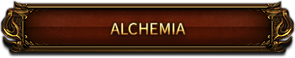
Alchemia to jeden z głównych systemów progresji. Wymaga czasu, zaangażowania i sporych ilości yang, ale oferuje potężne bonusy. Wyborna alchemia będzie trudna do zrobienia – i wartościowa.
Alchemik
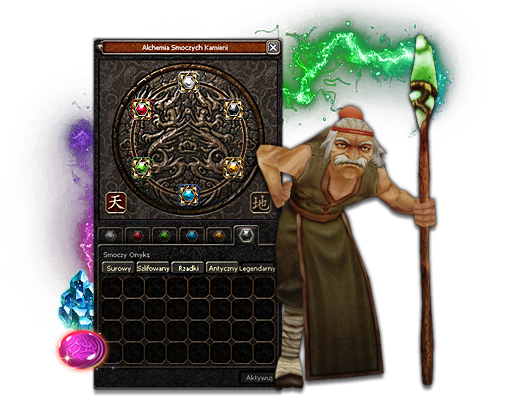Uszlachetnianie Smoczych Kamieni odbywa się u Alchemika.
Maksymalna klasa kamieni to: Legendarny
Maksymalna klasa jakości to: Wyborny.
Występują dwie odmiany Cor Draconis:
 Cor Draconis (surowy)
Cor Draconis (surowy)
 Cor Draconis (rzadki)
Cor Draconis (rzadki)
W celu zwiększenia ich poziomu potrzebujemy :
 Zielona Smocza Fasola
Zielona Smocza Fasola
 Różowa Smocza Fasola (+10%)
Różowa Smocza Fasola (+10%)
Bonusy kamyków
Bonusy prezentowane są dla wybornego stopnia.
| 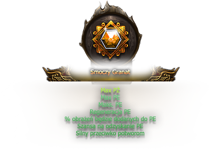 Wyborny Smoczy Granat |
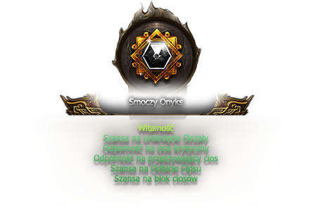 Wyborny Smoczy Onyks |
| 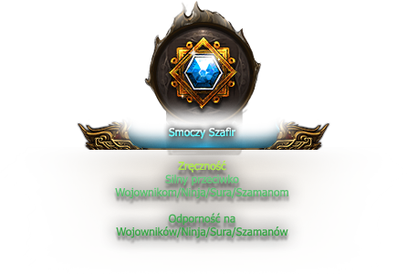 Wyborny Smoczy Szafir |
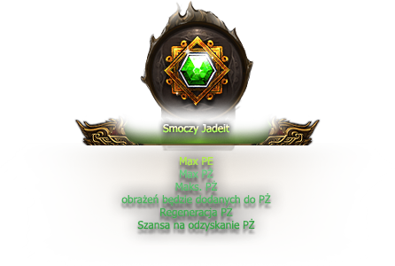 Wyborny Smoczy Jadeit |
| 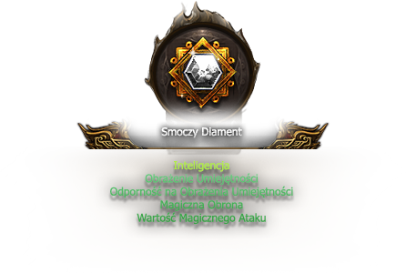 Wyborny Smoczy Diament |
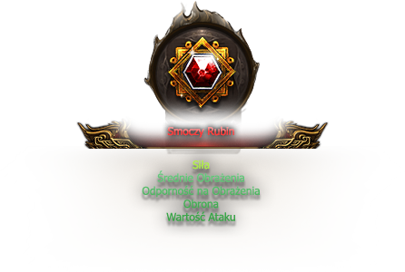 Wyborny Smoczy Rubin |
Bonus alchemii
Dodaliśmy premię +10% do bonusów alchemii, jeśli w kole znajdują się wszystkie Smocze Kamienie na poziomie Wyborny +6.
PREMIA NIE DZIAŁA JEŻELI CHOCIAŻ JEDEN KAMIEŃ NIE JEST NA POZIOMIE ULEPSZENIA WYBORNYM
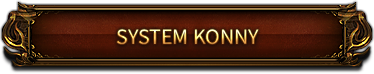
Jeździectwo zostało u nas rozwinięte do 40 poziomu.
Klasyczne misje zostały także usunięte.
Rozwój umiejętności
| Poziom | Przedmiot | Cooldown | Podstawowa Szansa |
|---|---|---|---|
0–21 |
|
30 min (można skrócić |
40% |
22–40 |
Rada Konna |
Brak limitu czasu |
40% |
Dodatkowo w przypadku poziomów 0 - 21
czytając  Medale Konne przy pomocy
Medale Konne przy pomocy  Rady Pustelnika
zwiększamy szanse do 100%
Rady Pustelnika
zwiększamy szanse do 100%
Rady Pustelnika nie działają na przedział 22–40.
Wytwarzanie
WYTWARZANIE RADY KONNEJ
| Przedmiot | Nazwa | Ilość |
|---|---|---|
|
Medal Konny | 10 |
 |
Zwój Błogosławieństwa | 5 |
 |
Zwój Egzorcyzmu | 3 |
|
Rada Pustelnika | 3 |
 |
Kamień Duchowy | 5 |
💰 Koszt wytworzenia: 250 000 Yang
Szansa na pomyślne wytworzenie: 90%
Bonusy na 40 poziomie
- +1000 PŻ
- Silny przeciwko Potworom +15
- +50 obrony
- Siła +12
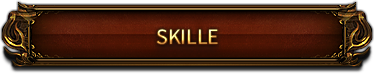
Umiejętności postaci
| item | Poziom | Ilość | Szansa | Szansa z Radą | Czas | Egzo |
|---|---|---|---|---|---|---|
 Księga |
M1-G1 | 55 | 40% | 100% | 24 godziny | Tak |
Kamień Duchowy |
G1-P | 10 | 25% | Nie działa | 24 godziny | Tak |
Pochodzenie przedmiotów
| Przedmiot | Pochodzenie |
|---|---|
| Księgi umiejętności |
Kamienie Metin |
| Kamienie duchowe |
Kamienie Metin, Bossy Mapowe |


 Książki Pasywne Książki Pasywne |
 Skrzynia Mocy z Kamieni Metin
Skrzynia Mocy z Kamieni Metin |
| Rada Pustelnika |
Bossy Mapowe oraz Dungeony |
| Zwój Egzorcyzmu |
Kamienie Metin |
Polimorfia
Polimorfia nie zwiększa obrażeń zadawanych na marmurze, a jedynie czas przemiany w potwora. Na maksymalnym poziomie czas przemiany w potwora wynosi 35 minut.
| item | Poziom | Ilość | Szansa | Szansa z Radą | Egzo |
|---|---|---|---|---|---|
Księga Polimorfii |
0-20 | 20 | 40% | 80% | Tak |
Zaaw. Księga Polimorfii |
M1-G1 | 10 | 40% | 80% | Tak |
Mistrz. Księga Polimorfii |
G1-P | 10 | 40% | 80% | Tak |
Uwaga: Efekt skilli zanika po teleportacji na polimorfii.
Dowodzenie
| item | Poziom | Ilość | Szansa | Szansa z Radą | Egzo |
|---|---|---|---|---|---|
 Sun-Zi |
0-20 | 20 | 30% | 70% | Tak |
Wu-Zi |
M1-G1 | 55 | 30% | 70% | Tak |
 Wei-Liao-Zi |
G1-P | 165 | 30% | 70% | Tak |
Bonusy Dowodzenia
| Poziom | Wartość Ataku | Szybkość Ataku | Max PŻ | Czas trwania |
Regen PŻ |
Obrona |
|---|---|---|---|---|---|---|
| M1 | +35 | +2 | +610 | +9 | +2% | +2% |
| G1 | +51 | +3 | +968 | +11 | +2% | +3% |
| P | +72 | +4 | +1450 | +15 | +3% | +4% |
Umiejętności pasywne
Na naszym serwerze dodaliśmy 3 umiejętności pasywne Dominacja, Potworologia, Metinologia. Maksymalny poziom umiejętności pasywnych: M1.
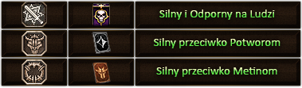
- Poziom 0 -> M1 : 55 ksiąg
- Szansa: 40%
- Cooldown: 24 godziny
- Działa Zwój Egzorcyzmu: Tak
- Szansa z Radą Pustelnika: 100%
Drop ksiąg
- Dominacja – Bossy Mapowe oraz Legendy.
- Potworologia – Bossy Dungeonowe.
- Metinologia – Kamienie Metin.
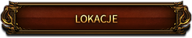
Na serwerze dostępnych jest wiele lokacji. Poniżej lista przykładowych map.
Mapa Rybacka
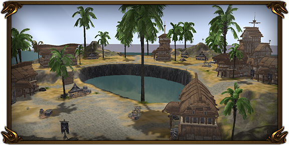- Wymagany Poziom: 30
Miasta Pierwsze
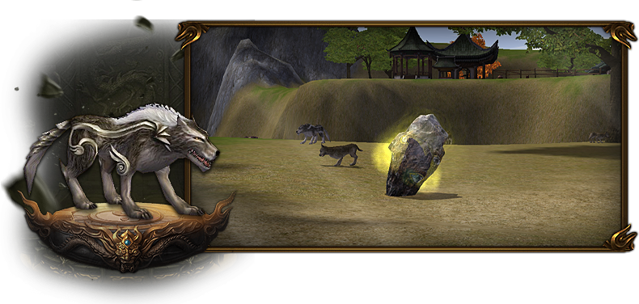- Wymagany Poziom: 1
- Ilość Metinów: 17
- Czas Respu Metinów: 5 - 10 minut
Miasta Drugie
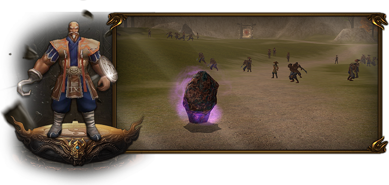- Wymagany Poziom: 1
- Ilość Metinów: 12
- Czas Respu Metinów: 10 - 15 minut
- Ilość Bosów: 2
- Czas Respu Bosów: 30 minut
Dolina Orków
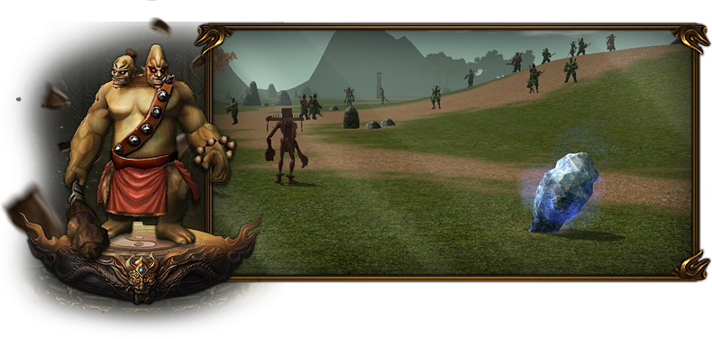- Wymagany Poziom: 1
- Ilość Metinów: 11
- Czas Respu Metinów: 15 minut
- Ilość Bosów: 2
- Czas Respu Bosów: 45 minut
Pustynia Yongbi
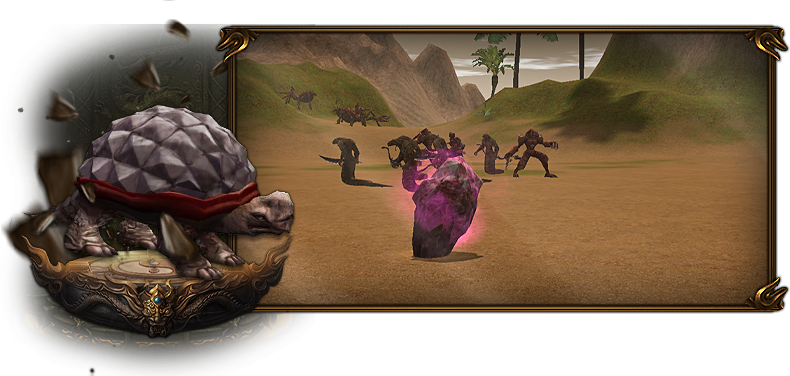- Wymagany Poziom: 1
- Ilość Metinów: 12
- Czas Respu Metinów: 15 minut
- Ilość Bosów: 1
- Czas Respu Bosów: 45 minut
Świątynia Hwang
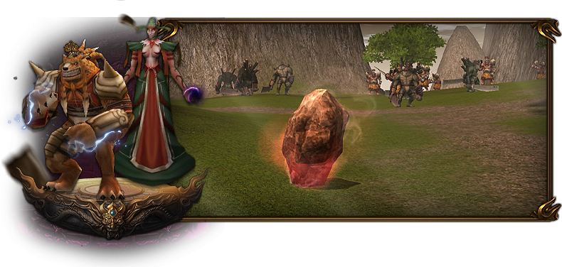- Wymagany Poziom: 1
- Ilość Metinów: 10
- Czas Respu Metinów: 15 minut
- Ilość Bosów: 2
- Czas Respu Bosów:
Reinkar. Ezot. Przyw — 45 minut
Zjawa — 90 minut
Ognista Ziemia
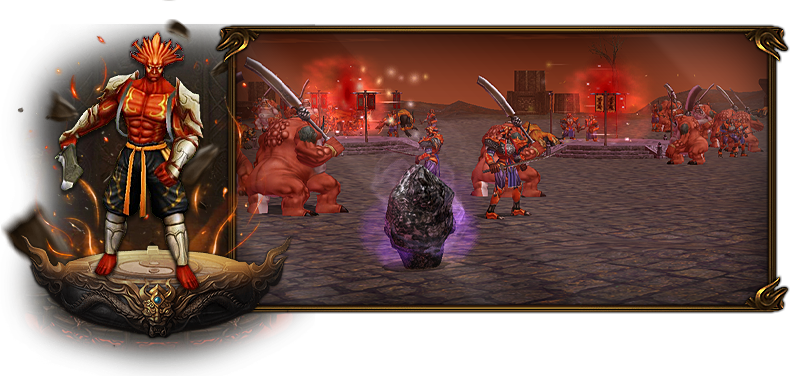- Wymagany Poziom: 1
- Ilość Metinów: 10
- Czas Respu Metinów: 15 minut
- Ilość Bosów: 1
- Czas Respu Bosów: 80 minut
Góra Sohan
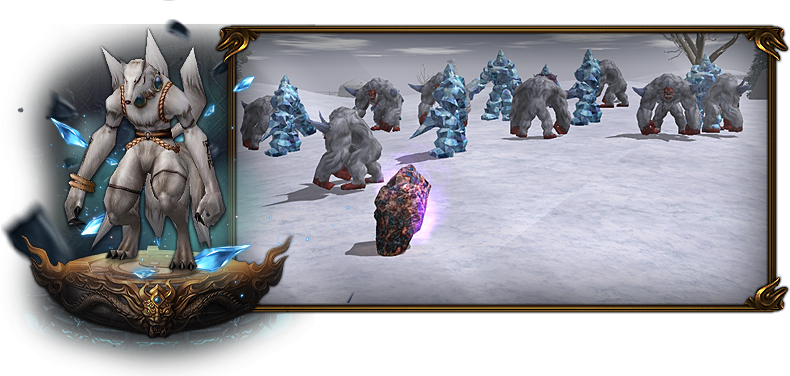- Wymagany Poziom: 1
- Ilość Metinów: 10
- Czas Respu Metinów: 15 minut
- Ilość Bosów: 1
- Czas Respu Bosów: 60 minut
Wężowe Pole
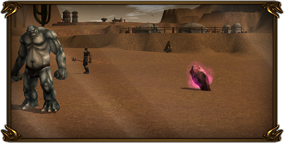- Wymagany Poziom: 1 — 89
- Ilość Metinów: 8
- Czas Respu Metinów: 20 minut
Kraina Gigantów
- Wymagany Poziom: 1
- Ilość Metinów: 8
- Czas Respu Metinów: 20 minut
Las Duchów
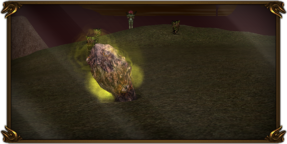- Wymagany Poziom: 1
- Ilość Metinów: 10
- Czas Respu Metinów: 20 minut
Czerwony Las
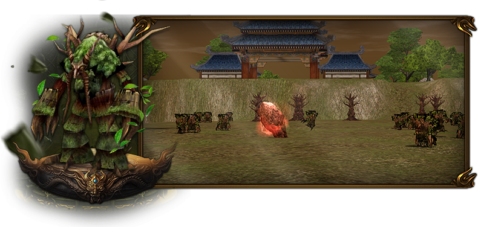- Wymagany Poziom: 1
- Ilość Metinów: 10
- Czas Respu Metinów: 20 minut
- Ilość Bosów: 2
- Czas Respu Bosów: 60 minut
Grota Wygnańców AV1/AV2
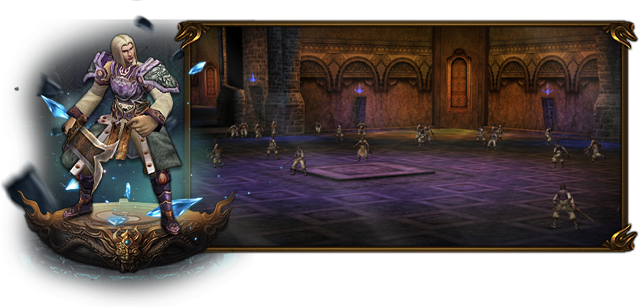- Wymagany Poziom: 75
- Ilość Metinów: brak
- Czas Respu Metinów: brak
- Ilość Bosów: 2
- Czas Respu Bosów: 6 godzin
- Drop małży został usunięty z Groty Wygnańców
Wąwóz Śmierci
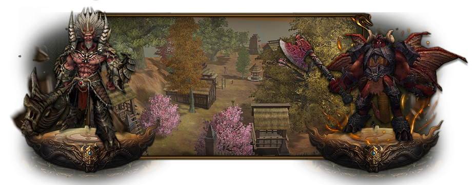- Wymagany Poziom: 90
- Ilość Metinów: 8
- Czas Respu Metinów: 20 minut
- Ilość Bosów: 3
- Czas Respu Bosów:
Polifem — 330 minut
Rakszas (2 respy) — 270 minut
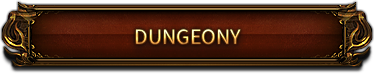
Na serwerze dostępnych jest 7 dobrze zbalansowanych, klasycznych dungeonów.
Dungeon Orkowy
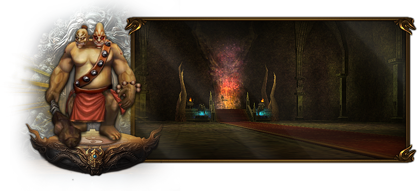- Poziom: 35–55
- Min. grupa: 2 osoby
- Wejście: 1 klucz
- Limit wejść: brak
- Bonus: Silny przeciwko Orkom
Wieża Demonów
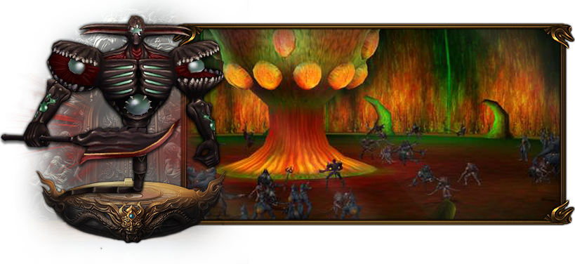- Poziom: od 40 (z Ripperem od 75)
- Min. grupa: 2 osoby
- Wejście: 1 klucz
- Limit wejść: brak
- Bonus: Silny przeciwko Nieumarłym
Komnata Baronówny
- Poziom: 61–74
- Min. grupa: 2 osoby
- Wejście: 1 klucz
- CD do kolejnego wejścia: 45 min
- Bonus: Silny przeciwko Potworom
Azrael


- Poziom: od 75
- Min. grupa: 2 osoby
- Wejście: 1 klucz
- CD do kolejnego wejścia: 60 min
- Bonus: Silny przeciwko Nieumarłym
Beran-Setao


- Poziom: od 75
- Min. grupa: 3 osoby
- Wejście: 6 krętych kluczy na postać
- CD do kolejnego wejścia: 150 min
- Bonus: Silny przeciwko Potworom
Razador
- Poziom: od 85
- Min. grupa: 2 osoby
- Wejście: 1 przepustka na postać
- CD do kolejnego wejścia: 120 min
- Bonus: Silny przeciwko Potworom
Hydra
- Poziom: od 95
- Min. grupa: 2 osoby
- Wejście: 1 przepustka na postać
- CD do kolejnego wejścia: 150 min
- Wymagane: Tarcza Tytanów (bez niej pokonanie Hydry niemożliwe)
- Bonus: Silny przeciwko Diabłom
Na Monastyr2 wprowadziliśmy system legendarnych bossów, które stanowią jeden z głównych filarów rywalizacji pomiędzy graczami i gildiami. Dostępne są trzy legendy, z czego jedna występuje w formie mini-legendy. Każda z nich została zaprojektowana tak, aby stanowić realne wyzwanie, a jednocześnie nagradzać graczy unikatowymi przedmiotami.
Legenda – Silna Lodowa Wiedźma
- Lokalizacja: Grota Wygnańców V1 (respawn na wszystkich kanałach)
- Czas pojawienia: co 8 godzin – 01:00, 09:00, 17:00
- Bonus: Silny na Potwory oraz Ludzi
- Drop unikatowy: Zbroje Tytanów
-
Zbroja Tytana +9
- Obrona 260
- Szybkość Ruchu -6%
- Średnie Obrażenia +5%
- Silny Przeciwko Potworom +20%
- Maks. PŻ +10%
Ubranie Tytana +9
- Obrona 260
- Szybkość Ruchu -6%
- Średnie Obrażenia +5%
- Silny Przeciwko Potworom +20%
- Maks. PŻ +10%
Pancerz Tytana +9
- Obrona 260
- Szybkość Ruchu -6%
- Średnie Obrażenia +5%
- Silny Przeciwko Potworom +20%
- Maks. PŻ +10%
Szata Tytana +9
- Obrona 260
- Szybkość Ruchu -6%
- Średnie Obrażenia +5%
- Silny Przeciwko Potworom +20%
- Maks. PŻ +10%
Mini Legenda – Malassy
- Lokalizacja: Wężowe Pole
- Czas pojawienia: codziennie 20:00 – ch5
- Wejście: do 89 poziomu
- Bonus: Silny na Potwory oraz Ludzi
- Drop unikatowy: Kupony SM
Legenda – Skalisty Golem
- Lokalizacja: Wąwóz Śmierci
- Czas pojawienia: codziennie 20:00 – ch5
- Wejście: od 90 poziomu
- Bonus: Silny na Potwory oraz Ludzi
- Drop unikatowy: Tarcza Tytanów + Kupony SM
-
Tarcza Tytanów +9
- Obrona 163
- Szybkość Ruchu -6%
- Odporność na Obrażenia Umiejętności +12%
- Silny Przeciwko Diabłom +20%
Dodatkowa informacja
Na legendy będzie działać zarówno bonus silny przeciwko potworom, jak i silny przeciwko ludziom.
Dzięki temu każda walka o te bossy stanie się nie tylko starciem z wymagającym przeciwnikiem, ale także polem intensywnej rywalizacji pomiędzy graczami.
To rozwiązanie ma na celu wzmocnienie elementu rywalizacji gildyjnej oraz nadanie legendom szczególnej rangi –
tak żeby przedmioty z nich były jeszcze bardziej unikalne.
Pionierzy Monastyr2
Pierwsi gracze, którzy osiągną maksymalny poziom, otrzymają unikatowe
Zbroje Hwang (4 sztuki – po jednej dla każdej klasy).
Na stałe, nigdy więcej nie do zdobycia.
Przewyższają wartością bonusów kostiumy z ItemShopu.
Max PŻ: +1000
Silny przeciwko ludziom: +15%
Silny przeciwko potworom: +15%
Nagroda 5000 Złotych
Małżeństwo
Małżeństwo zawrzecie u Starszej Pani.
Umożliwi to wam teleport między swoimi postaciami za pomocą Pierścionka Zaręczynowego.
Wymagania do zawarcia małżeństwa
| Wymaganie | Streszczenie |
|---|---|
| 30 Poziom postaci | Obie postacie muszą posiadać odpowiedni poziom |
| Pierścionek Zaręczynowy | Pierścionek Zaręczynowy w ekwipunku obu postaci |
| Strój weselny | Wymagany strój weselny dla obu postaci |
Stroje weselne można nabyć za opłatą u Domokrążcy, natomiast Pierścienie Zaręczynowe zdobywa się z misji lub można zakupić w Item-Shopie.
Dodajemy system w postaci recyklingu mniej wartościowych przedmiotów.
Peleryny Męstwa
Recykling u Jae-Seon Kim w pierwszych miastach.
U niego wymienisz mniej warte  Kamienie Duszy oraz Księgi
Umiejętności
Kamienie Duszy oraz Księgi
Umiejętności
na 2–4 szt.  Peleryny Męstwa.
Peleryny Męstwa.
Wymiana przedmiotów
Wymiana przedmiotów u Jae-Seon Kim w pierwszych miastach.
2× Wzmocnienie Przedmiotu  |
1× Zaczarowanie Przedmiotu  |
|
1× Marmur Błogosławieństwa  |
2× Zaczarowanie Przedmiotu |
|
| 4× Zaczarowanie Przedmiotu |
1× Wzmocnienie Przedmiotu |
Osełki
System osełek służy do podnoszenia jakości broni PvE.
Crafting
Osełki wytwarzamy u Jae-Seon Kim.
Wymagania: dowolna broń 75 lvl ulepszona do +4.


Szansa na pomyślne wytworzenie osełki: 80%
Doskonalenie ekwipunku
- Każde udane dodanie osełki to +1% wartości.
- W broniach PvE jest to bonus „Silny przeciwko potworom” – maks. 12%.
- Szansa na polepszenie ekwipunku przy użyciu osełki: 20%.
- Wytworzone osełki możemy dodać zarówno do broni 55 jak i 75.
KAMIENIE DUSZY +5
W celu sprawdzenia bonusów należy najechać na Kamień Duszy po lewej stronie okienka (jest to końcowy produkt craftingu)
Za każdą próbę wytworzenia należy uiścić opłatę w postaci:
 10.000.000 Yang
10.000.000 Yang
Szansa na pomyślne wytworzenie to 80%.
10.000.000
PASY
PAS LNIANY

Lniany Pas +9
Od poziomu: 50
Silny Przeciwko potworom: +5%
| Przedmiot | Nazwa | Ilość |
|---|---|---|
 |
Szkatułka Wodza Orków | 60 |
|
Szkat. Królowej Pająków | 30 |
|
Szkat. Pustynnego Żółwia | 30 |
|
Marmur Błogosławieństwa | 100 |
|
Zwój Egzorcyzmu | 50 |
💰 Koszt wytworzenia: 1 000 000 Yang
Szansa na pomyślne wytworzenie: 100%
PAS SKÓRZANY

Skórzany Pas +9
Od poziomu: 50
Silny Przeciwko ludziom: +5%
| Przedmiot | Nazwa | Ilość |
|---|---|---|
|
Szkat. Dziewięciu Ogonów | 30 |
|
Szkat. Żółtego Tygrysa | 30 |
|
Szkat. Ognistego Króla | 30 |
|
Marmur Błogosławieństwa | 100 |
|
Rada Pustelnika | 50 |
💰 Koszt wytworzenia: 1 000 000 Yang
Szansa na pomyślne wytworzenie: 100%
Ulepszanie pasów
Pasy będziemy mogli przerobić na dalszy poziom.
Z każdym ulepszeniem wymagany poziom będzie rósł aż do 105lv.
Żeby przerobić pas dalej będziemy potrzebowali rudy z Górnictwa.
Szczegółów razem z bonusami nie chcemy zdradzać i pozostawiamy to Wam, żebyście przekonali się sami już w grze na serwerze.
Większość misji została usunięta
Misje które pozostały to:
Badania (Biolog / Seon-Pyeong)
Misje Fabularne - gwarantują stałe bonusy
Misje Biologa
| Poziom | Zadanie | Oddawane przedmioty | Nagroda |
|---|---|---|---|
| 30 | Badania Biologa 1 |
 Ząb Orka ×10 Ząb Orka ×10
 Kamień Duchowy Jinno Kamień Duchowy Jinno
|
+10% do szybkości poruszania się (stały) |
| 40 | Badania Biologa 2 |
 Księga Klątw ×15 Księga Klątw ×15
 Świątynny Kamień Duchowy Świątynny Kamień Duchowy
|
+5 pkt do szybkości ataku (stały) |
| 50 | Badania Biologa 3 |
 Pamiątka po Demonie ×15 Pamiątka po Demonie ×15
 Kamień Duchowy Sagyi Kamień Duchowy Sagyi
|
+60 pkt do obrony (stały) |
| 60 | Badania Biologa 4 |
 Matowy Lód ×20 Matowy Lód ×20
 Kamień Duchowy Aurtumryu Kamień Duchowy Aurtumryu
|
+50 do wartości ataku (stały) |
| 70 | Badania Biologa 5 |
 Konar Zelkova ×25 Konar Zelkova ×25
 Kamień Duchowy Gyimok Kamień Duchowy Gyimok
|
+10% odporności na wszystko (stały) |
| 80 | Badania Biologa 6 |
 Certyfikat Tugyisa ×30 Certyfikat Tugyisa ×30
 Kamień Duchowy Tugyi Kamień Duchowy Tugyi
|
+10% ataku fizycznego (stały) |
| 85 | Badania Biologa 7 |
 Czerw. Konar Duchodrzewa ×40 Czerw. Konar Duchodrzewa ×40
 Kamień Duchowy Lasu Kamień Duchowy Lasu
|
+10% odporność na ludzi (stały) |
| 90 | Badania Biologa 8 |
 Notatka Przywódcy ×50 Notatka Przywódcy ×50
 Kamień Duchowy Liderów Kamień Duchowy Liderów
|
8% większa Siła Ataku przeciwko innym graczom (stały) |
| 92 | Badanie Seona-Pyeonga |
 Klejnot Zawiści ×10 Klejnot Zawiści ×10
|
Do wyboru
|
| 94 | Klejnoty dla Seona-Pyeonga |
 Klejnot Mądrości ×20 Klejnot Mądrości ×20
 Kamień Duchowy Beran-Setaou Kamień Duchowy Beran-Setaou
|
Do wyboru
|
Ekwipunek PVE
Ekwipunek PVP
Czy gra działa płynnie na słabszych komputerach?
Tak, dzięki klientowi 64-bitowemu oraz licznym optymalizacjom gra działa stabilnie nawet na starszym sprzęcie.
Czy włączę klienta na systemie operacyjnym takim jak mac?
Nie, nasz klient nie będzie obsługiwał środowiska macOS.
Czy w jakikolwiek sposób był modyfikowany exp?
Tak, zwiększyliśmy doświadczenie z potworów do czerwonego lasu o 20%.
Co z yangami, czy było to jakoś zmieniane?
Zdecydowaliśmy się na zmniejszenie upuszczanego złota z potworów o 25%
Dodatkowo zmniejszyliśmy wartość przedmiotów (broni,zbroi,tarczy etc.)
Czy na ziemię dalej będzie wypadała masa przedmiotów?
Nie, na naszym serwerze postaraliśmy się ograniczyć drop "syfu" do minimum.
Dotyczy to zarówno bosów, metinów jak i potworów.
A co z ksuciem?
Czy dalej jak ktoś podbiegnie i uderzy metina dostanie część dropu?
Nie, na serwerze wprowadziliśmy podział dropu w zależności od zadanych obrażeń.
Żeby otrzymać część dropu z danego metina / bossa — potrzebujemy zadać 20% obrażeń.
W przeciwnym wypadku nie otrzymamy nic.
Skąd na serwerze wezmę książki typu polimorfia, dowodzenie?
Usuwając zbędne przedmioty z większości instancji, usuneliśmy z nich także książki.
Stworzyliśmy nową skrzynkę z Metinów, w której będą zawarte wszystkie książki pasywne :
Skrzynia Mocy
Skąd zdobyć bronie na 55 poziom?
Bronie na 55 poziom otrzymujemy z:
Wodza Orków,
Reinkar. Ezot. Przyw.


Bronie te posiadają wbudowane średnie.